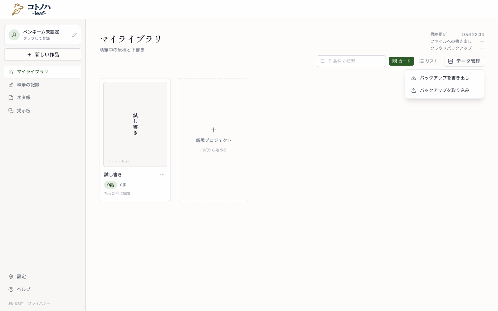
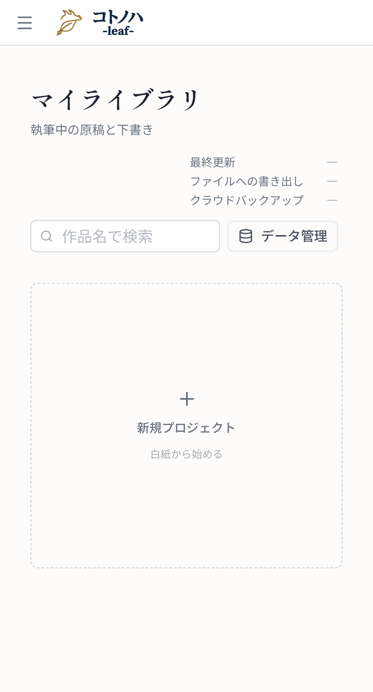
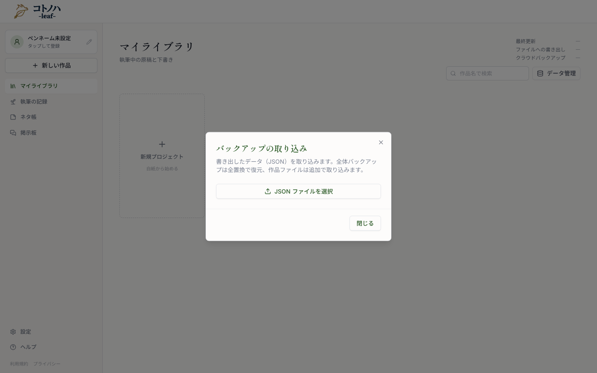
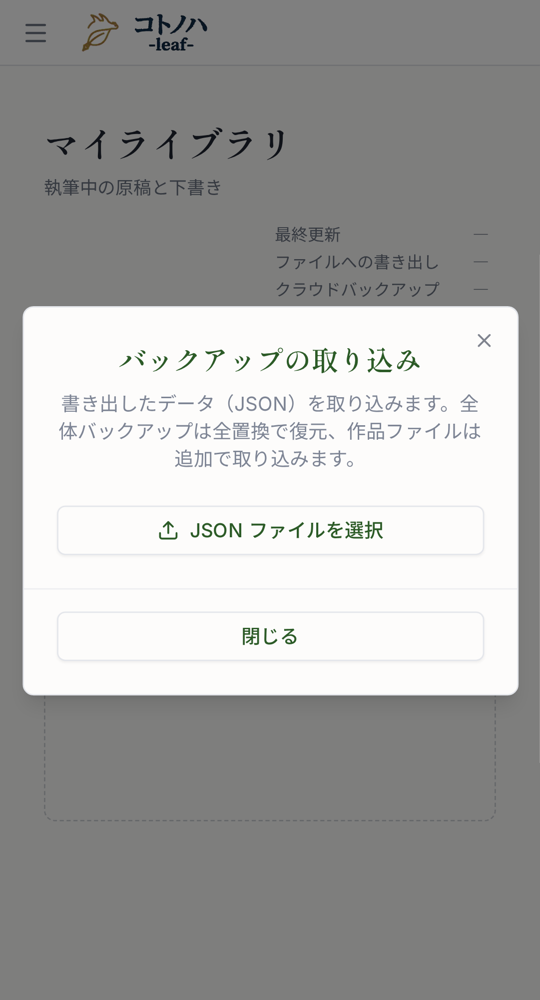

Linear COT-31。.txt や貼り付けた本文を「第1話」などの見出し行で話に分け、確かめてから新しい作品として作る。番号 ①〜⑩ は design.md の UI 節と対応する。配色・余白・フッターの並びは現状のダイアログ（下のスクショ）に合わせ、新しい見た目は足していない。
#/）

DataMenuItem・アイコン FileText・既存と同じラベルのみ・幅 230px）近い既存画面は「バックアップの取り込み」。見出しの明朝・緑、説明文のトーン、フッターのボタン並び（モバイルでは全幅・縦積み）を踏襲する。幅だけは書き出しダイアログと同じ2ペイン幅にする。

